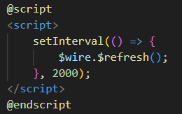
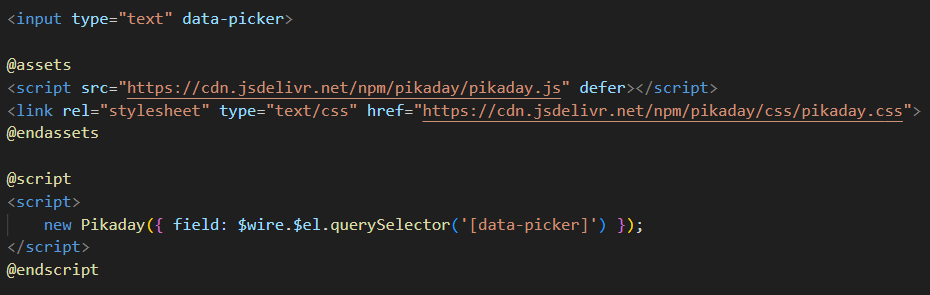

Hay muchos casos en que las utilidades integradas en Livewire y Alpine no son suficientes para lograr tus objetivos dentro de los componentes.
Afortunadamente, Livewire proporciona muchos puntos de extensión y herramientas útiles para interactuar con JavaScript personalizado. Puedes obtener información de la referencia exhaustiva en la página de documentación de JavaScript. Pero por ahora, aquí hay algunas formas útiles de usar tu propio JavaScript dentro de sus componentes Livewire.
Livewire proporciona una útil directiva @script que, al envolver un elemento script, ejecutará el JavaScript dado cuando tu componente se inicialice en la página.
Aquí hay un ejemplo de un @script simple que usa setInterval() de JavaScript para actualizar el componente cada dos segundos:
Notarás que estamos usando un objeto llamado $wire dentro del script para controlar el componente. Livewire automáticamente hace que este objeto esté disponible dentro de cualquier @script. Si no está familiarizado con $wire, puede obtener más información sobre $wire en documentación que esta después. Para que te hagas una idea:
Además de los @script únicos, Livewire proporciona una útil utilidad @assets para cargar fácilmente cualquier dependencia script/estilo en la página.
También garantiza que los assets proporcionados se carguen solo una vez por página del navegador, a diferencia de @script, que se ejecuta cada vez que se inicializa una nueva instancia del componente Livewire.
Aquí hay un ejemplo del uso de @assets para cargar una biblioteca de selección de fechas llamada Pikaday e inicializarla dentro del componente usando @script:
Si estas utilizando componentes Blade para extraer partes del marcado, también puede usar @script y @assets dentro de ellos; incluso si hay varios componentes Blade dentro del mismo componente Livewire. Sin embargo, @script y @assets actualmente solo se admiten en el contexto de un componente Livewire, lo que significa que si usas el componente Blade determinado fuera de Livewire por completo, esos scripts y assets no se cargarán en la página.